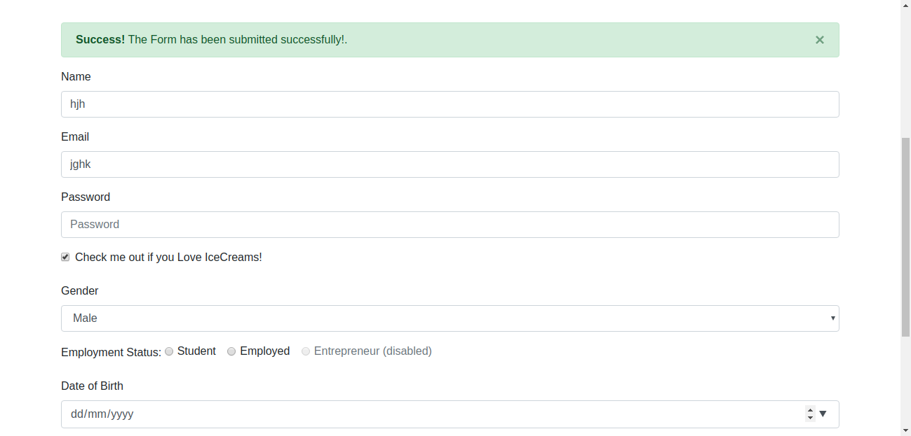
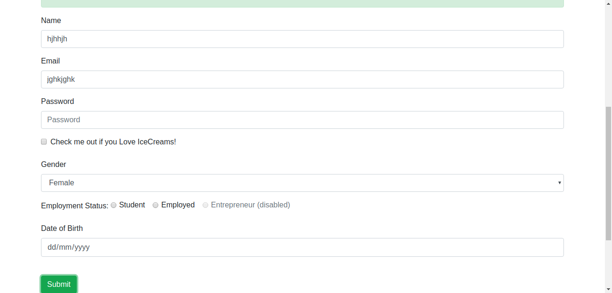

Report generated on 05-Mar-2020 at 15:14:15 by pytest-html v2.0.1
| Packages | {'pytest': '5.3.5', 'py': '1.8.1', 'pluggy': '0.13.1'} |
| Platform | Linux-5.3.0-40-generic-x86_64-with-Ubuntu-18.04-bionic |
| Plugins | {'metadata': '1.8.0', 'html': '2.0.1'} |
| Python | 3.6.8 |
3 tests ran in 19.91 seconds.
(Un)check the boxes to filter the results.
1 passed, 0 skipped, 2 failed, 0 errors, 0 expected failures, 0 unexpected passes| Result | Test | Duration | Links |
|---|---|---|---|
| No results found. Try to check the filters | |||
| Failed | test_homepage.py::TestHomePage::test_formSubmission[getData0] | 1.18 | |
|
 self = <tests.test_homepage.TestHomePage object at 0x7f8865e06080>, getData = {'firstname': 'hjh', 'gender': 'Male', 'lastname': 'jghk'} def test_formSubmission(self,getData): log = self.getLogger() homepage=HomePage(self.driver) log.info("this is the first name",getData["firstname"]) homepage.getName().send_keys(getData["firstname"]) homepage.getEmail().send_keys(getData["lastname"]) homepage.getCheckBox().click() self.selectOptionByText(homepage.getGender(),getData["gender"]) homepage.submitForm().click() alertText = homepage.getSuccessMessage().text > assert ("Succesfghdhfs" in alertText) E AssertionError: assert 'Succesfghdhfs' in '×\nSuccess! The Form has been submitted successfully!.' test_homepage.py:29: AssertionError ------------------------------Captured stderr call------------------------------ --- Logging error --- Traceback (most recent call last): File "/usr/lib/python3.6/logging/__init__.py", line 994, in emit msg = self.format(record) File "/usr/lib/python3.6/logging/__init__.py", line 840, in format return fmt.format(record) File "/usr/lib/python3.6/logging/__init__.py", line 577, in format record.message = record.getMessage() File "/usr/lib/python3.6/logging/__init__.py", line 338, in getMessage msg = msg % self.args TypeError: not all arguments converted during string formatting Call stack: File "/home/bridgeit/PycharmProjects/Pythonautomation/venv/bin/py.test", line 10, in <module> sys.exit(main()) File "/home/bridgeit/PycharmProjects/Pythonautomation/venv/lib/python3.6/site-packages/_pytest/config/__init__.py", line 93, in main config=config File "/home/bridgeit/PycharmProjects/Pythonautomation/venv/lib/python3.6/site-packages/pluggy/hooks.py", line 286, in __call__ return self._hookexec(self, self.get_hookimpls(), kwargs) File "/home/bridgeit/PycharmProjects/Pythonautomation/venv/lib/python3.6/site-packages/pluggy/manager.py", line 93, in _hookexec return self._inner_hookexec(hook, methods, kwargs) File "/home/bridgeit/PycharmProjects/Pythonautomation/venv/lib/python3.6/site-packages/pluggy/manager.py", line 87, in <lambda> firstresult=hook.spec.opts.get("firstresult") if hook.spec else False, File "/home/bridgeit/PycharmProjects/Pythonautomation/venv/lib/python3.6/site-packages/pluggy/callers.py", line 187, in _multicall res = hook_impl.function(*args) File "/home/bridgeit/PycharmProjects/Pythonautomation/venv/lib/python3.6/site-packages/_pytest/main.py", line 240, in pytest_cmdline_main return wrap_session(config, _main) File "/home/bridgeit/PycharmProjects/Pythonautomation/venv/lib/python3.6/site-packages/_pytest/main.py", line 197, in wrap_session session.exitstatus = doit(config, session) or 0 File "/home/bridgeit/PycharmProjects/Pythonautomation/venv/lib/python3.6/site-packages/_pytest/main.py", line 247, in _main config.hook.pytest_runtestloop(session=session) File "/home/bridgeit/PycharmProjects/Pythonautomation/venv/lib/python3.6/site-packages/pluggy/hooks.py", line 286, in __call__ return self._hookexec(self, self.get_hookimpls(), kwargs) File "/home/bridgeit/PycharmProjects/Pythonautomation/venv/lib/python3.6/site-packages/pluggy/manager.py", line 93, in _hookexec return self._inner_hookexec(hook, methods, kwargs) File "/home/bridgeit/PycharmProjects/Pythonautomation/venv/lib/python3.6/site-packages/pluggy/manager.py", line 87, in <lambda> firstresult=hook.spec.opts.get("firstresult") if hook.spec else False, File "/home/bridgeit/PycharmProjects/Pythonautomation/venv/lib/python3.6/site-packages/pluggy/callers.py", line 187, in _multicall res = hook_impl.function(*args) File "/home/bridgeit/PycharmProjects/Pythonautomation/venv/lib/python3.6/site-packages/_pytest/main.py", line 271, in pytest_runtestloop item.config.hook.pytest_runtest_protocol(item=item, nextitem=nextitem) File "/home/bridgeit/PycharmProjects/Pythonautomation/venv/lib/python3.6/site-packages/pluggy/hooks.py", line 286, in __call__ return self._hookexec(self, self.get_hookimpls(), kwargs) File "/home/bridgeit/PycharmProjects/Pythonautomation/venv/lib/python3.6/site-packages/pluggy/manager.py", line 93, in _hookexec return self._inner_hookexec(hook, methods, kwargs) File "/home/bridgeit/PycharmProjects/Pythonautomation/venv/lib/python3.6/site-packages/pluggy/manager.py", line 87, in <lambda> firstresult=hook.spec.opts.get("firstresult") if hook.spec else False, File "/home/bridgeit/PycharmProjects/Pythonautomation/venv/lib/python3.6/site-packages/pluggy/callers.py", line 187, in _multicall res = hook_impl.function(*args) File "/home/bridgeit/PycharmProjects/Pythonautomation/venv/lib/python3.6/site-packages/_pytest/runner.py", line 84, in pytest_runtest_protocol runtestprotocol(item, nextitem=nextitem) File "/home/bridgeit/PycharmProjects/Pythonautomation/venv/lib/python3.6/site-packages/_pytest/runner.py", line 99, in runtestprotocol reports.append(call_and_report(item, "call", log)) File "/home/bridgeit/PycharmProjects/Pythonautomation/venv/lib/python3.6/site-packages/_pytest/runner.py", line 185, in call_and_report call = call_runtest_hook(item, when, **kwds) File "/home/bridgeit/PycharmProjects/Pythonautomation/venv/lib/python3.6/site-packages/_pytest/runner.py", line 210, in call_runtest_hook lambda: ihook(item=item, **kwds), when=when, reraise=reraise File "/home/bridgeit/PycharmProjects/Pythonautomation/venv/lib/python3.6/site-packages/_pytest/runner.py", line 237, in from_call result = func() File "/home/bridgeit/PycharmProjects/Pythonautomation/venv/lib/python3.6/site-packages/_pytest/runner.py", line 210, in <lambda> lambda: ihook(item=item, **kwds), when=when, reraise=reraise File "/home/bridgeit/PycharmProjects/Pythonautomation/venv/lib/python3.6/site-packages/pluggy/hooks.py", line 286, in __call__ return self._hookexec(self, self.get_hookimpls(), kwargs) File "/home/bridgeit/PycharmProjects/Pythonautomation/venv/lib/python3.6/site-packages/pluggy/manager.py", line 93, in _hookexec return self._inner_hookexec(hook, methods, kwargs) File "/home/bridgeit/PycharmProjects/Pythonautomation/venv/lib/python3.6/site-packages/pluggy/manager.py", line 87, in <lambda> firstresult=hook.spec.opts.get("firstresult") if hook.spec else False, File "/home/bridgeit/PycharmProjects/Pythonautomation/venv/lib/python3.6/site-packages/pluggy/callers.py", line 187, in _multicall res = hook_impl.function(*args) File "/home/bridgeit/PycharmProjects/Pythonautomation/venv/lib/python3.6/site-packages/_pytest/runner.py", line 134, in pytest_runtest_call item.runtest() File "/home/bridgeit/PycharmProjects/Pythonautomation/venv/lib/python3.6/site-packages/_pytest/python.py", line 1445, in runtest self.ihook.pytest_pyfunc_call(pyfuncitem=self) File "/home/bridgeit/PycharmProjects/Pythonautomation/venv/lib/python3.6/site-packages/pluggy/hooks.py", line 286, in __call__ return self._hookexec(self, self.get_hookimpls(), kwargs) File "/home/bridgeit/PycharmProjects/Pythonautomation/venv/lib/python3.6/site-packages/pluggy/manager.py", line 93, in _hookexec return self._inner_hookexec(hook, methods, kwargs) File "/home/bridgeit/PycharmProjects/Pythonautomation/venv/lib/python3.6/site-packages/pluggy/manager.py", line 87, in <lambda> firstresult=hook.spec.opts.get("firstresult") if hook.spec else False, File "/home/bridgeit/PycharmProjects/Pythonautomation/venv/lib/python3.6/site-packages/pluggy/callers.py", line 187, in _multicall res = hook_impl.function(*args) File "/home/bridgeit/PycharmProjects/Pythonautomation/venv/lib/python3.6/site-packages/_pytest/python.py", line 167, in pytest_pyfunc_call result = testfunction(**testargs) File "/home/bridgeit/PycharmProjects/Pythonautomation/tests/test_homepage.py", line 18, in test_formSubmission log.info("this is the first name",getData["firstname"]) Message: 'this is the first name' Arguments: ('hjh',) --- Logging error --- Traceback (most recent call last): File "/usr/lib/python3.6/logging/__init__.py", line 994, in emit msg = self.format(record) File "/usr/lib/python3.6/logging/__init__.py", line 840, in format return fmt.format(record) File "/home/bridgeit/PycharmProjects/Pythonautomation/venv/lib/python3.6/site-packages/_pytest/logging.py", line 70, in format return super().format(record) File "/usr/lib/python3.6/logging/__init__.py", line 577, in format record.message = record.getMessage() File "/usr/lib/python3.6/logging/__init__.py", line 338, in getMessage msg = msg % self.args TypeError: not all arguments converted during string formatting Call stack: File "/home/bridgeit/PycharmProjects/Pythonautomation/venv/bin/py.test", line 10, in <module> sys.exit(main()) File "/home/bridgeit/PycharmProjects/Pythonautomation/venv/lib/python3.6/site-packages/_pytest/config/__init__.py", line 93, in main config=config File "/home/bridgeit/PycharmProjects/Pythonautomation/venv/lib/python3.6/site-packages/pluggy/hooks.py", line 286, in __call__ return self._hookexec(self, self.get_hookimpls(), kwargs) File "/home/bridgeit/PycharmProjects/Pythonautomation/venv/lib/python3.6/site-packages/pluggy/manager.py", line 93, in _hookexec return self._inner_hookexec(hook, methods, kwargs) File "/home/bridgeit/PycharmProjects/Pythonautomation/venv/lib/python3.6/site-packages/pluggy/manager.py", line 87, in <lambda> firstresult=hook.spec.opts.get("firstresult") if hook.spec else False, File "/home/bridgeit/PycharmProjects/Pythonautomation/venv/lib/python3.6/site-packages/pluggy/callers.py", line 187, in _multicall res = hook_impl.function(*args) File "/home/bridgeit/PycharmProjects/Pythonautomation/venv/lib/python3.6/site-packages/_pytest/main.py", line 240, in pytest_cmdline_main return wrap_session(config, _main) File "/home/bridgeit/PycharmProjects/Pythonautomation/venv/lib/python3.6/site-packages/_pytest/main.py", line 197, in wrap_session session.exitstatus = doit(config, session) or 0 File "/home/bridgeit/PycharmProjects/Pythonautomation/venv/lib/python3.6/site-packages/_pytest/main.py", line 247, in _main config.hook.pytest_runtestloop(session=session) File "/home/bridgeit/PycharmProjects/Pythonautomation/venv/lib/python3.6/site-packages/pluggy/hooks.py", line 286, in __call__ return self._hookexec(self, self.get_hookimpls(), kwargs) File "/home/bridgeit/PycharmProjects/Pythonautomation/venv/lib/python3.6/site-packages/pluggy/manager.py", line 93, in _hookexec return self._inner_hookexec(hook, methods, kwargs) File "/home/bridgeit/PycharmProjects/Pythonautomation/venv/lib/python3.6/site-packages/pluggy/manager.py", line 87, in <lambda> firstresult=hook.spec.opts.get("firstresult") if hook.spec else False, File "/home/bridgeit/PycharmProjects/Pythonautomation/venv/lib/python3.6/site-packages/pluggy/callers.py", line 187, in _multicall res = hook_impl.function(*args) File "/home/bridgeit/PycharmProjects/Pythonautomation/venv/lib/python3.6/site-packages/_pytest/main.py", line 271, in pytest_runtestloop item.config.hook.pytest_runtest_protocol(item=item, nextitem=nextitem) File "/home/bridgeit/PycharmProjects/Pythonautomation/venv/lib/python3.6/site-packages/pluggy/hooks.py", line 286, in __call__ return self._hookexec(self, self.get_hookimpls(), kwargs) File "/home/bridgeit/PycharmProjects/Pythonautomation/venv/lib/python3.6/site-packages/pluggy/manager.py", line 93, in _hookexec return self._inner_hookexec(hook, methods, kwargs) File "/home/bridgeit/PycharmProjects/Pythonautomation/venv/lib/python3.6/site-packages/pluggy/manager.py", line 87, in <lambda> firstresult=hook.spec.opts.get("firstresult") if hook.spec else False, File "/home/bridgeit/PycharmProjects/Pythonautomation/venv/lib/python3.6/site-packages/pluggy/callers.py", line 187, in _multicall res = hook_impl.function(*args) File "/home/bridgeit/PycharmProjects/Pythonautomation/venv/lib/python3.6/site-packages/_pytest/runner.py", line 84, in pytest_runtest_protocol runtestprotocol(item, nextitem=nextitem) File "/home/bridgeit/PycharmProjects/Pythonautomation/venv/lib/python3.6/site-packages/_pytest/runner.py", line 99, in runtestprotocol reports.append(call_and_report(item, "call", log)) File "/home/bridgeit/PycharmProjects/Pythonautomation/venv/lib/python3.6/site-packages/_pytest/runner.py", line 185, in call_and_report call = call_runtest_hook(item, when, **kwds) File "/home/bridgeit/PycharmProjects/Pythonautomation/venv/lib/python3.6/site-packages/_pytest/runner.py", line 210, in call_runtest_hook lambda: ihook(item=item, **kwds), when=when, reraise=reraise File "/home/bridgeit/PycharmProjects/Pythonautomation/venv/lib/python3.6/site-packages/_pytest/runner.py", line 237, in from_call result = func() File "/home/bridgeit/PycharmProjects/Pythonautomation/venv/lib/python3.6/site-packages/_pytest/runner.py", line 210, in <lambda> lambda: ihook(item=item, **kwds), when=when, reraise=reraise File "/home/bridgeit/PycharmProjects/Pythonautomation/venv/lib/python3.6/site-packages/pluggy/hooks.py", line 286, in __call__ return self._hookexec(self, self.get_hookimpls(), kwargs) File "/home/bridgeit/PycharmProjects/Pythonautomation/venv/lib/python3.6/site-packages/pluggy/manager.py", line 93, in _hookexec return self._inner_hookexec(hook, methods, kwargs) File "/home/bridgeit/PycharmProjects/Pythonautomation/venv/lib/python3.6/site-packages/pluggy/manager.py", line 87, in <lambda> firstresult=hook.spec.opts.get("firstresult") if hook.spec else False, File "/home/bridgeit/PycharmProjects/Pythonautomation/venv/lib/python3.6/site-packages/pluggy/callers.py", line 187, in _multicall res = hook_impl.function(*args) File "/home/bridgeit/PycharmProjects/Pythonautomation/venv/lib/python3.6/site-packages/_pytest/runner.py", line 134, in pytest_runtest_call item.runtest() File "/home/bridgeit/PycharmProjects/Pythonautomation/venv/lib/python3.6/site-packages/_pytest/python.py", line 1445, in runtest self.ihook.pytest_pyfunc_call(pyfuncitem=self) File "/home/bridgeit/PycharmProjects/Pythonautomation/venv/lib/python3.6/site-packages/pluggy/hooks.py", line 286, in __call__ return self._hookexec(self, self.get_hookimpls(), kwargs) File "/home/bridgeit/PycharmProjects/Pythonautomation/venv/lib/python3.6/site-packages/pluggy/manager.py", line 93, in _hookexec return self._inner_hookexec(hook, methods, kwargs) File "/home/bridgeit/PycharmProjects/Pythonautomation/venv/lib/python3.6/site-packages/pluggy/manager.py", line 87, in <lambda> firstresult=hook.spec.opts.get("firstresult") if hook.spec else False, File "/home/bridgeit/PycharmProjects/Pythonautomation/venv/lib/python3.6/site-packages/pluggy/callers.py", line 187, in _multicall res = hook_impl.function(*args) File "/home/bridgeit/PycharmProjects/Pythonautomation/venv/lib/python3.6/site-packages/_pytest/python.py", line 167, in pytest_pyfunc_call result = testfunction(**testargs) File "/home/bridgeit/PycharmProjects/Pythonautomation/tests/test_homepage.py", line 18, in test_formSubmission log.info("this is the first name",getData["firstname"]) File "/usr/lib/python3.6/logging/__init__.py", line 1308, in info self._log(INFO, msg, args, **kwargs) File "/usr/lib/python3.6/logging/__init__.py", line 1444, in _log self.handle(record) File "/usr/lib/python3.6/logging/__init__.py", line 1454, in handle self.callHandlers(record) File "/usr/lib/python3.6/logging/__init__.py", line 1516, in callHandlers hdlr.handle(record) File "/usr/lib/python3.6/logging/__init__.py", line 865, in handle self.emit(record) File "/home/bridgeit/PycharmProjects/Pythonautomation/venv/lib/python3.6/site-packages/_pytest/logging.py", line 301, in emit logging.StreamHandler.emit(self, record) Message: 'this is the first name' Arguments: ('hjh',) | |||
| Failed | test_homepage.py::TestHomePage::test_formSubmission[getData1] | 0.80 | |
|
 self = <tests.test_homepage.TestHomePage object at 0x7f8865578c50>, getData = {'firstname': 'hjh', 'gender': 'Female', 'lastname': 'jghk'} def test_formSubmission(self,getData): log = self.getLogger() homepage=HomePage(self.driver) log.info("this is the first name",getData["firstname"]) homepage.getName().send_keys(getData["firstname"]) homepage.getEmail().send_keys(getData["lastname"]) homepage.getCheckBox().click() self.selectOptionByText(homepage.getGender(),getData["gender"]) homepage.submitForm().click() alertText = homepage.getSuccessMessage().text > assert ("Succesfghdhfs" in alertText) E AssertionError: assert 'Succesfghdhfs' in '×\nSuccess! The Form has been submitted successfully!.' test_homepage.py:29: AssertionError ------------------------------Captured stderr call------------------------------ --- Logging error --- Traceback (most recent call last): File "/usr/lib/python3.6/logging/__init__.py", line 994, in emit msg = self.format(record) File "/usr/lib/python3.6/logging/__init__.py", line 840, in format return fmt.format(record) File "/usr/lib/python3.6/logging/__init__.py", line 577, in format record.message = record.getMessage() File "/usr/lib/python3.6/logging/__init__.py", line 338, in getMessage msg = msg % self.args TypeError: not all arguments converted during string formatting Call stack: File "/home/bridgeit/PycharmProjects/Pythonautomation/venv/bin/py.test", line 10, in <module> sys.exit(main()) File "/home/bridgeit/PycharmProjects/Pythonautomation/venv/lib/python3.6/site-packages/_pytest/config/__init__.py", line 93, in main config=config File "/home/bridgeit/PycharmProjects/Pythonautomation/venv/lib/python3.6/site-packages/pluggy/hooks.py", line 286, in __call__ return self._hookexec(self, self.get_hookimpls(), kwargs) File "/home/bridgeit/PycharmProjects/Pythonautomation/venv/lib/python3.6/site-packages/pluggy/manager.py", line 93, in _hookexec return self._inner_hookexec(hook, methods, kwargs) File "/home/bridgeit/PycharmProjects/Pythonautomation/venv/lib/python3.6/site-packages/pluggy/manager.py", line 87, in <lambda> firstresult=hook.spec.opts.get("firstresult") if hook.spec else False, File "/home/bridgeit/PycharmProjects/Pythonautomation/venv/lib/python3.6/site-packages/pluggy/callers.py", line 187, in _multicall res = hook_impl.function(*args) File "/home/bridgeit/PycharmProjects/Pythonautomation/venv/lib/python3.6/site-packages/_pytest/main.py", line 240, in pytest_cmdline_main return wrap_session(config, _main) File "/home/bridgeit/PycharmProjects/Pythonautomation/venv/lib/python3.6/site-packages/_pytest/main.py", line 197, in wrap_session session.exitstatus = doit(config, session) or 0 File "/home/bridgeit/PycharmProjects/Pythonautomation/venv/lib/python3.6/site-packages/_pytest/main.py", line 247, in _main config.hook.pytest_runtestloop(session=session) File "/home/bridgeit/PycharmProjects/Pythonautomation/venv/lib/python3.6/site-packages/pluggy/hooks.py", line 286, in __call__ return self._hookexec(self, self.get_hookimpls(), kwargs) File "/home/bridgeit/PycharmProjects/Pythonautomation/venv/lib/python3.6/site-packages/pluggy/manager.py", line 93, in _hookexec return self._inner_hookexec(hook, methods, kwargs) File "/home/bridgeit/PycharmProjects/Pythonautomation/venv/lib/python3.6/site-packages/pluggy/manager.py", line 87, in <lambda> firstresult=hook.spec.opts.get("firstresult") if hook.spec else False, File "/home/bridgeit/PycharmProjects/Pythonautomation/venv/lib/python3.6/site-packages/pluggy/callers.py", line 187, in _multicall res = hook_impl.function(*args) File "/home/bridgeit/PycharmProjects/Pythonautomation/venv/lib/python3.6/site-packages/_pytest/main.py", line 271, in pytest_runtestloop item.config.hook.pytest_runtest_protocol(item=item, nextitem=nextitem) File "/home/bridgeit/PycharmProjects/Pythonautomation/venv/lib/python3.6/site-packages/pluggy/hooks.py", line 286, in __call__ return self._hookexec(self, self.get_hookimpls(), kwargs) File "/home/bridgeit/PycharmProjects/Pythonautomation/venv/lib/python3.6/site-packages/pluggy/manager.py", line 93, in _hookexec return self._inner_hookexec(hook, methods, kwargs) File "/home/bridgeit/PycharmProjects/Pythonautomation/venv/lib/python3.6/site-packages/pluggy/manager.py", line 87, in <lambda> firstresult=hook.spec.opts.get("firstresult") if hook.spec else False, File "/home/bridgeit/PycharmProjects/Pythonautomation/venv/lib/python3.6/site-packages/pluggy/callers.py", line 187, in _multicall res = hook_impl.function(*args) File "/home/bridgeit/PycharmProjects/Pythonautomation/venv/lib/python3.6/site-packages/_pytest/runner.py", line 84, in pytest_runtest_protocol runtestprotocol(item, nextitem=nextitem) File "/home/bridgeit/PycharmProjects/Pythonautomation/venv/lib/python3.6/site-packages/_pytest/runner.py", line 99, in runtestprotocol reports.append(call_and_report(item, "call", log)) File "/home/bridgeit/PycharmProjects/Pythonautomation/venv/lib/python3.6/site-packages/_pytest/runner.py", line 185, in call_and_report call = call_runtest_hook(item, when, **kwds) File "/home/bridgeit/PycharmProjects/Pythonautomation/venv/lib/python3.6/site-packages/_pytest/runner.py", line 210, in call_runtest_hook lambda: ihook(item=item, **kwds), when=when, reraise=reraise File "/home/bridgeit/PycharmProjects/Pythonautomation/venv/lib/python3.6/site-packages/_pytest/runner.py", line 237, in from_call result = func() File "/home/bridgeit/PycharmProjects/Pythonautomation/venv/lib/python3.6/site-packages/_pytest/runner.py", line 210, in <lambda> lambda: ihook(item=item, **kwds), when=when, reraise=reraise File "/home/bridgeit/PycharmProjects/Pythonautomation/venv/lib/python3.6/site-packages/pluggy/hooks.py", line 286, in __call__ return self._hookexec(self, self.get_hookimpls(), kwargs) File "/home/bridgeit/PycharmProjects/Pythonautomation/venv/lib/python3.6/site-packages/pluggy/manager.py", line 93, in _hookexec return self._inner_hookexec(hook, methods, kwargs) File "/home/bridgeit/PycharmProjects/Pythonautomation/venv/lib/python3.6/site-packages/pluggy/manager.py", line 87, in <lambda> firstresult=hook.spec.opts.get("firstresult") if hook.spec else False, File "/home/bridgeit/PycharmProjects/Pythonautomation/venv/lib/python3.6/site-packages/pluggy/callers.py", line 187, in _multicall res = hook_impl.function(*args) File "/home/bridgeit/PycharmProjects/Pythonautomation/venv/lib/python3.6/site-packages/_pytest/runner.py", line 134, in pytest_runtest_call item.runtest() File "/home/bridgeit/PycharmProjects/Pythonautomation/venv/lib/python3.6/site-packages/_pytest/python.py", line 1445, in runtest self.ihook.pytest_pyfunc_call(pyfuncitem=self) File "/home/bridgeit/PycharmProjects/Pythonautomation/venv/lib/python3.6/site-packages/pluggy/hooks.py", line 286, in __call__ return self._hookexec(self, self.get_hookimpls(), kwargs) File "/home/bridgeit/PycharmProjects/Pythonautomation/venv/lib/python3.6/site-packages/pluggy/manager.py", line 93, in _hookexec return self._inner_hookexec(hook, methods, kwargs) File "/home/bridgeit/PycharmProjects/Pythonautomation/venv/lib/python3.6/site-packages/pluggy/manager.py", line 87, in <lambda> firstresult=hook.spec.opts.get("firstresult") if hook.spec else False, File "/home/bridgeit/PycharmProjects/Pythonautomation/venv/lib/python3.6/site-packages/pluggy/callers.py", line 187, in _multicall res = hook_impl.function(*args) File "/home/bridgeit/PycharmProjects/Pythonautomation/venv/lib/python3.6/site-packages/_pytest/python.py", line 167, in pytest_pyfunc_call result = testfunction(**testargs) File "/home/bridgeit/PycharmProjects/Pythonautomation/tests/test_homepage.py", line 18, in test_formSubmission log.info("this is the first name",getData["firstname"]) Message: 'this is the first name' Arguments: ('hjh',) --- Logging error --- Traceback (most recent call last): File "/usr/lib/python3.6/logging/__init__.py", line 994, in emit msg = self.format(record) File "/usr/lib/python3.6/logging/__init__.py", line 840, in format return fmt.format(record) File "/usr/lib/python3.6/logging/__init__.py", line 577, in format record.message = record.getMessage() File "/usr/lib/python3.6/logging/__init__.py", line 338, in getMessage msg = msg % self.args TypeError: not all arguments converted during string formatting Call stack: File "/home/bridgeit/PycharmProjects/Pythonautomation/venv/bin/py.test", line 10, in <module> sys.exit(main()) File "/home/bridgeit/PycharmProjects/Pythonautomation/venv/lib/python3.6/site-packages/_pytest/config/__init__.py", line 93, in main config=config File "/home/bridgeit/PycharmProjects/Pythonautomation/venv/lib/python3.6/site-packages/pluggy/hooks.py", line 286, in __call__ return self._hookexec(self, self.get_hookimpls(), kwargs) File "/home/bridgeit/PycharmProjects/Pythonautomation/venv/lib/python3.6/site-packages/pluggy/manager.py", line 93, in _hookexec return self._inner_hookexec(hook, methods, kwargs) File "/home/bridgeit/PycharmProjects/Pythonautomation/venv/lib/python3.6/site-packages/pluggy/manager.py", line 87, in <lambda> firstresult=hook.spec.opts.get("firstresult") if hook.spec else False, File "/home/bridgeit/PycharmProjects/Pythonautomation/venv/lib/python3.6/site-packages/pluggy/callers.py", line 187, in _multicall res = hook_impl.function(*args) File "/home/bridgeit/PycharmProjects/Pythonautomation/venv/lib/python3.6/site-packages/_pytest/main.py", line 240, in pytest_cmdline_main return wrap_session(config, _main) File "/home/bridgeit/PycharmProjects/Pythonautomation/venv/lib/python3.6/site-packages/_pytest/main.py", line 197, in wrap_session session.exitstatus = doit(config, session) or 0 File "/home/bridgeit/PycharmProjects/Pythonautomation/venv/lib/python3.6/site-packages/_pytest/main.py", line 247, in _main config.hook.pytest_runtestloop(session=session) File "/home/bridgeit/PycharmProjects/Pythonautomation/venv/lib/python3.6/site-packages/pluggy/hooks.py", line 286, in __call__ return self._hookexec(self, self.get_hookimpls(), kwargs) File "/home/bridgeit/PycharmProjects/Pythonautomation/venv/lib/python3.6/site-packages/pluggy/manager.py", line 93, in _hookexec return self._inner_hookexec(hook, methods, kwargs) File "/home/bridgeit/PycharmProjects/Pythonautomation/venv/lib/python3.6/site-packages/pluggy/manager.py", line 87, in <lambda> firstresult=hook.spec.opts.get("firstresult") if hook.spec else False, File "/home/bridgeit/PycharmProjects/Pythonautomation/venv/lib/python3.6/site-packages/pluggy/callers.py", line 187, in _multicall res = hook_impl.function(*args) File "/home/bridgeit/PycharmProjects/Pythonautomation/venv/lib/python3.6/site-packages/_pytest/main.py", line 271, in pytest_runtestloop item.config.hook.pytest_runtest_protocol(item=item, nextitem=nextitem) File "/home/bridgeit/PycharmProjects/Pythonautomation/venv/lib/python3.6/site-packages/pluggy/hooks.py", line 286, in __call__ return self._hookexec(self, self.get_hookimpls(), kwargs) File "/home/bridgeit/PycharmProjects/Pythonautomation/venv/lib/python3.6/site-packages/pluggy/manager.py", line 93, in _hookexec return self._inner_hookexec(hook, methods, kwargs) File "/home/bridgeit/PycharmProjects/Pythonautomation/venv/lib/python3.6/site-packages/pluggy/manager.py", line 87, in <lambda> firstresult=hook.spec.opts.get("firstresult") if hook.spec else False, File "/home/bridgeit/PycharmProjects/Pythonautomation/venv/lib/python3.6/site-packages/pluggy/callers.py", line 187, in _multicall res = hook_impl.function(*args) File "/home/bridgeit/PycharmProjects/Pythonautomation/venv/lib/python3.6/site-packages/_pytest/runner.py", line 84, in pytest_runtest_protocol runtestprotocol(item, nextitem=nextitem) File "/home/bridgeit/PycharmProjects/Pythonautomation/venv/lib/python3.6/site-packages/_pytest/runner.py", line 99, in runtestprotocol reports.append(call_and_report(item, "call", log)) File "/home/bridgeit/PycharmProjects/Pythonautomation/venv/lib/python3.6/site-packages/_pytest/runner.py", line 185, in call_and_report call = call_runtest_hook(item, when, **kwds) File "/home/bridgeit/PycharmProjects/Pythonautomation/venv/lib/python3.6/site-packages/_pytest/runner.py", line 210, in call_runtest_hook lambda: ihook(item=item, **kwds), when=when, reraise=reraise File "/home/bridgeit/PycharmProjects/Pythonautomation/venv/lib/python3.6/site-packages/_pytest/runner.py", line 237, in from_call result = func() File "/home/bridgeit/PycharmProjects/Pythonautomation/venv/lib/python3.6/site-packages/_pytest/runner.py", line 210, in <lambda> lambda: ihook(item=item, **kwds), when=when, reraise=reraise File "/home/bridgeit/PycharmProjects/Pythonautomation/venv/lib/python3.6/site-packages/pluggy/hooks.py", line 286, in __call__ return self._hookexec(self, self.get_hookimpls(), kwargs) File "/home/bridgeit/PycharmProjects/Pythonautomation/venv/lib/python3.6/site-packages/pluggy/manager.py", line 93, in _hookexec return self._inner_hookexec(hook, methods, kwargs) File "/home/bridgeit/PycharmProjects/Pythonautomation/venv/lib/python3.6/site-packages/pluggy/manager.py", line 87, in <lambda> firstresult=hook.spec.opts.get("firstresult") if hook.spec else False, File "/home/bridgeit/PycharmProjects/Pythonautomation/venv/lib/python3.6/site-packages/pluggy/callers.py", line 187, in _multicall res = hook_impl.function(*args) File "/home/bridgeit/PycharmProjects/Pythonautomation/venv/lib/python3.6/site-packages/_pytest/runner.py", line 134, in pytest_runtest_call item.runtest() File "/home/bridgeit/PycharmProjects/Pythonautomation/venv/lib/python3.6/site-packages/_pytest/python.py", line 1445, in runtest self.ihook.pytest_pyfunc_call(pyfuncitem=self) File "/home/bridgeit/PycharmProjects/Pythonautomation/venv/lib/python3.6/site-packages/pluggy/hooks.py", line 286, in __call__ return self._hookexec(self, self.get_hookimpls(), kwargs) File "/home/bridgeit/PycharmProjects/Pythonautomation/venv/lib/python3.6/site-packages/pluggy/manager.py", line 93, in _hookexec return self._inner_hookexec(hook, methods, kwargs) File "/home/bridgeit/PycharmProjects/Pythonautomation/venv/lib/python3.6/site-packages/pluggy/manager.py", line 87, in <lambda> firstresult=hook.spec.opts.get("firstresult") if hook.spec else False, File "/home/bridgeit/PycharmProjects/Pythonautomation/venv/lib/python3.6/site-packages/pluggy/callers.py", line 187, in _multicall res = hook_impl.function(*args) File "/home/bridgeit/PycharmProjects/Pythonautomation/venv/lib/python3.6/site-packages/_pytest/python.py", line 167, in pytest_pyfunc_call result = testfunction(**testargs) File "/home/bridgeit/PycharmProjects/Pythonautomation/tests/test_homepage.py", line 18, in test_formSubmission log.info("this is the first name",getData["firstname"]) Message: 'this is the first name' Arguments: ('hjh',) --- Logging error --- Traceback (most recent call last): File "/usr/lib/python3.6/logging/__init__.py", line 994, in emit msg = self.format(record) File "/usr/lib/python3.6/logging/__init__.py", line 840, in format return fmt.format(record) File "/home/bridgeit/PycharmProjects/Pythonautomation/venv/lib/python3.6/site-packages/_pytest/logging.py", line 70, in format return super().format(record) File "/usr/lib/python3.6/logging/__init__.py", line 577, in format record.message = record.getMessage() File "/usr/lib/python3.6/logging/__init__.py", line 338, in getMessage msg = msg % self.args TypeError: not all arguments converted during string formatting Call stack: File "/home/bridgeit/PycharmProjects/Pythonautomation/venv/bin/py.test", line 10, in <module> sys.exit(main()) File "/home/bridgeit/PycharmProjects/Pythonautomation/venv/lib/python3.6/site-packages/_pytest/config/__init__.py", line 93, in main config=config File "/home/bridgeit/PycharmProjects/Pythonautomation/venv/lib/python3.6/site-packages/pluggy/hooks.py", line 286, in __call__ return self._hookexec(self, self.get_hookimpls(), kwargs) File "/home/bridgeit/PycharmProjects/Pythonautomation/venv/lib/python3.6/site-packages/pluggy/manager.py", line 93, in _hookexec return self._inner_hookexec(hook, methods, kwargs) File "/home/bridgeit/PycharmProjects/Pythonautomation/venv/lib/python3.6/site-packages/pluggy/manager.py", line 87, in <lambda> firstresult=hook.spec.opts.get("firstresult") if hook.spec else False, File "/home/bridgeit/PycharmProjects/Pythonautomation/venv/lib/python3.6/site-packages/pluggy/callers.py", line 187, in _multicall res = hook_impl.function(*args) File "/home/bridgeit/PycharmProjects/Pythonautomation/venv/lib/python3.6/site-packages/_pytest/main.py", line 240, in pytest_cmdline_main return wrap_session(config, _main) File "/home/bridgeit/PycharmProjects/Pythonautomation/venv/lib/python3.6/site-packages/_pytest/main.py", line 197, in wrap_session session.exitstatus = doit(config, session) or 0 File "/home/bridgeit/PycharmProjects/Pythonautomation/venv/lib/python3.6/site-packages/_pytest/main.py", line 247, in _main config.hook.pytest_runtestloop(session=session) File "/home/bridgeit/PycharmProjects/Pythonautomation/venv/lib/python3.6/site-packages/pluggy/hooks.py", line 286, in __call__ return self._hookexec(self, self.get_hookimpls(), kwargs) File "/home/bridgeit/PycharmProjects/Pythonautomation/venv/lib/python3.6/site-packages/pluggy/manager.py", line 93, in _hookexec return self._inner_hookexec(hook, methods, kwargs) File "/home/bridgeit/PycharmProjects/Pythonautomation/venv/lib/python3.6/site-packages/pluggy/manager.py", line 87, in <lambda> firstresult=hook.spec.opts.get("firstresult") if hook.spec else False, File "/home/bridgeit/PycharmProjects/Pythonautomation/venv/lib/python3.6/site-packages/pluggy/callers.py", line 187, in _multicall res = hook_impl.function(*args) File "/home/bridgeit/PycharmProjects/Pythonautomation/venv/lib/python3.6/site-packages/_pytest/main.py", line 271, in pytest_runtestloop item.config.hook.pytest_runtest_protocol(item=item, nextitem=nextitem) File "/home/bridgeit/PycharmProjects/Pythonautomation/venv/lib/python3.6/site-packages/pluggy/hooks.py", line 286, in __call__ return self._hookexec(self, self.get_hookimpls(), kwargs) File "/home/bridgeit/PycharmProjects/Pythonautomation/venv/lib/python3.6/site-packages/pluggy/manager.py", line 93, in _hookexec return self._inner_hookexec(hook, methods, kwargs) File "/home/bridgeit/PycharmProjects/Pythonautomation/venv/lib/python3.6/site-packages/pluggy/manager.py", line 87, in <lambda> firstresult=hook.spec.opts.get("firstresult") if hook.spec else False, File "/home/bridgeit/PycharmProjects/Pythonautomation/venv/lib/python3.6/site-packages/pluggy/callers.py", line 187, in _multicall res = hook_impl.function(*args) File "/home/bridgeit/PycharmProjects/Pythonautomation/venv/lib/python3.6/site-packages/_pytest/runner.py", line 84, in pytest_runtest_protocol runtestprotocol(item, nextitem=nextitem) File "/home/bridgeit/PycharmProjects/Pythonautomation/venv/lib/python3.6/site-packages/_pytest/runner.py", line 99, in runtestprotocol reports.append(call_and_report(item, "call", log)) File "/home/bridgeit/PycharmProjects/Pythonautomation/venv/lib/python3.6/site-packages/_pytest/runner.py", line 185, in call_and_report call = call_runtest_hook(item, when, **kwds) File "/home/bridgeit/PycharmProjects/Pythonautomation/venv/lib/python3.6/site-packages/_pytest/runner.py", line 210, in call_runtest_hook lambda: ihook(item=item, **kwds), when=when, reraise=reraise File "/home/bridgeit/PycharmProjects/Pythonautomation/venv/lib/python3.6/site-packages/_pytest/runner.py", line 237, in from_call result = func() File "/home/bridgeit/PycharmProjects/Pythonautomation/venv/lib/python3.6/site-packages/_pytest/runner.py", line 210, in <lambda> lambda: ihook(item=item, **kwds), when=when, reraise=reraise File "/home/bridgeit/PycharmProjects/Pythonautomation/venv/lib/python3.6/site-packages/pluggy/hooks.py", line 286, in __call__ return self._hookexec(self, self.get_hookimpls(), kwargs) File "/home/bridgeit/PycharmProjects/Pythonautomation/venv/lib/python3.6/site-packages/pluggy/manager.py", line 93, in _hookexec return self._inner_hookexec(hook, methods, kwargs) File "/home/bridgeit/PycharmProjects/Pythonautomation/venv/lib/python3.6/site-packages/pluggy/manager.py", line 87, in <lambda> firstresult=hook.spec.opts.get("firstresult") if hook.spec else False, File "/home/bridgeit/PycharmProjects/Pythonautomation/venv/lib/python3.6/site-packages/pluggy/callers.py", line 187, in _multicall res = hook_impl.function(*args) File "/home/bridgeit/PycharmProjects/Pythonautomation/venv/lib/python3.6/site-packages/_pytest/runner.py", line 134, in pytest_runtest_call item.runtest() File "/home/bridgeit/PycharmProjects/Pythonautomation/venv/lib/python3.6/site-packages/_pytest/python.py", line 1445, in runtest self.ihook.pytest_pyfunc_call(pyfuncitem=self) File "/home/bridgeit/PycharmProjects/Pythonautomation/venv/lib/python3.6/site-packages/pluggy/hooks.py", line 286, in __call__ return self._hookexec(self, self.get_hookimpls(), kwargs) File "/home/bridgeit/PycharmProjects/Pythonautomation/venv/lib/python3.6/site-packages/pluggy/manager.py", line 93, in _hookexec return self._inner_hookexec(hook, methods, kwargs) File "/home/bridgeit/PycharmProjects/Pythonautomation/venv/lib/python3.6/site-packages/pluggy/manager.py", line 87, in <lambda> firstresult=hook.spec.opts.get("firstresult") if hook.spec else False, File "/home/bridgeit/PycharmProjects/Pythonautomation/venv/lib/python3.6/site-packages/pluggy/callers.py", line 187, in _multicall res = hook_impl.function(*args) File "/home/bridgeit/PycharmProjects/Pythonautomation/venv/lib/python3.6/site-packages/_pytest/python.py", line 167, in pytest_pyfunc_call result = testfunction(**testargs) File "/home/bridgeit/PycharmProjects/Pythonautomation/tests/test_homepage.py", line 18, in test_formSubmission log.info("this is the first name",getData["firstname"]) File "/usr/lib/python3.6/logging/__init__.py", line 1308, in info self._log(INFO, msg, args, **kwargs) File "/usr/lib/python3.6/logging/__init__.py", line 1444, in _log self.handle(record) File "/usr/lib/python3.6/logging/__init__.py", line 1454, in handle self.callHandlers(record) File "/usr/lib/python3.6/logging/__init__.py", line 1516, in callHandlers hdlr.handle(record) File "/usr/lib/python3.6/logging/__init__.py", line 865, in handle self.emit(record) File "/home/bridgeit/PycharmProjects/Pythonautomation/venv/lib/python3.6/site-packages/_pytest/logging.py", line 301, in emit logging.StreamHandler.emit(self, record) Message: 'this is the first name' Arguments: ('hjh',) | |||
| Passed | test_e2e.py::TestOne::test_e2e | 8.84 | |
|
------------------------------Captured stdout call------------------------------ × Success! Thank you! Your order will be delivered in next few weeks :-). ------------------------------Captured stderr call------------------------------ --- Logging error --- Traceback (most recent call last): File "/usr/lib/python3.6/logging/__init__.py", line 994, in emit msg = self.format(record) File "/usr/lib/python3.6/logging/__init__.py", line 840, in format return fmt.format(record) File "/usr/lib/python3.6/logging/__init__.py", line 577, in format record.message = record.getMessage() File "/usr/lib/python3.6/logging/__init__.py", line 338, in getMessage msg = msg % self.args TypeError: not all arguments converted during string formatting Call stack: File "/home/bridgeit/PycharmProjects/Pythonautomation/venv/bin/py.test", line 10, in <module> sys.exit(main()) File "/home/bridgeit/PycharmProjects/Pythonautomation/venv/lib/python3.6/site-packages/_pytest/config/__init__.py", line 93, in main config=config File "/home/bridgeit/PycharmProjects/Pythonautomation/venv/lib/python3.6/site-packages/pluggy/hooks.py", line 286, in __call__ return self._hookexec(self, self.get_hookimpls(), kwargs) File "/home/bridgeit/PycharmProjects/Pythonautomation/venv/lib/python3.6/site-packages/pluggy/manager.py", line 93, in _hookexec return self._inner_hookexec(hook, methods, kwargs) File "/home/bridgeit/PycharmProjects/Pythonautomation/venv/lib/python3.6/site-packages/pluggy/manager.py", line 87, in <lambda> firstresult=hook.spec.opts.get("firstresult") if hook.spec else False, File "/home/bridgeit/PycharmProjects/Pythonautomation/venv/lib/python3.6/site-packages/pluggy/callers.py", line 187, in _multicall res = hook_impl.function(*args) File "/home/bridgeit/PycharmProjects/Pythonautomation/venv/lib/python3.6/site-packages/_pytest/main.py", line 240, in pytest_cmdline_main return wrap_session(config, _main) File "/home/bridgeit/PycharmProjects/Pythonautomation/venv/lib/python3.6/site-packages/_pytest/main.py", line 197, in wrap_session session.exitstatus = doit(config, session) or 0 File "/home/bridgeit/PycharmProjects/Pythonautomation/venv/lib/python3.6/site-packages/_pytest/main.py", line 247, in _main config.hook.pytest_runtestloop(session=session) File "/home/bridgeit/PycharmProjects/Pythonautomation/venv/lib/python3.6/site-packages/pluggy/hooks.py", line 286, in __call__ return self._hookexec(self, self.get_hookimpls(), kwargs) File "/home/bridgeit/PycharmProjects/Pythonautomation/venv/lib/python3.6/site-packages/pluggy/manager.py", line 93, in _hookexec return self._inner_hookexec(hook, methods, kwargs) File "/home/bridgeit/PycharmProjects/Pythonautomation/venv/lib/python3.6/site-packages/pluggy/manager.py", line 87, in <lambda> firstresult=hook.spec.opts.get("firstresult") if hook.spec else False, File "/home/bridgeit/PycharmProjects/Pythonautomation/venv/lib/python3.6/site-packages/pluggy/callers.py", line 187, in _multicall res = hook_impl.function(*args) File "/home/bridgeit/PycharmProjects/Pythonautomation/venv/lib/python3.6/site-packages/_pytest/main.py", line 271, in pytest_runtestloop item.config.hook.pytest_runtest_protocol(item=item, nextitem=nextitem) File "/home/bridgeit/PycharmProjects/Pythonautomation/venv/lib/python3.6/site-packages/pluggy/hooks.py", line 286, in __call__ return self._hookexec(self, self.get_hookimpls(), kwargs) File "/home/bridgeit/PycharmProjects/Pythonautomation/venv/lib/python3.6/site-packages/pluggy/manager.py", line 93, in _hookexec return self._inner_hookexec(hook, methods, kwargs) File "/home/bridgeit/PycharmProjects/Pythonautomation/venv/lib/python3.6/site-packages/pluggy/manager.py", line 87, in <lambda> firstresult=hook.spec.opts.get("firstresult") if hook.spec else False, File "/home/bridgeit/PycharmProjects/Pythonautomation/venv/lib/python3.6/site-packages/pluggy/callers.py", line 187, in _multicall res = hook_impl.function(*args) File "/home/bridgeit/PycharmProjects/Pythonautomation/venv/lib/python3.6/site-packages/_pytest/runner.py", line 84, in pytest_runtest_protocol runtestprotocol(item, nextitem=nextitem) File "/home/bridgeit/PycharmProjects/Pythonautomation/venv/lib/python3.6/site-packages/_pytest/runner.py", line 99, in runtestprotocol reports.append(call_and_report(item, "call", log)) File "/home/bridgeit/PycharmProjects/Pythonautomation/venv/lib/python3.6/site-packages/_pytest/runner.py", line 185, in call_and_report call = call_runtest_hook(item, when, **kwds) File "/home/bridgeit/PycharmProjects/Pythonautomation/venv/lib/python3.6/site-packages/_pytest/runner.py", line 210, in call_runtest_hook lambda: ihook(item=item, **kwds), when=when, reraise=reraise File "/home/bridgeit/PycharmProjects/Pythonautomation/venv/lib/python3.6/site-packages/_pytest/runner.py", line 237, in from_call result = func() File "/home/bridgeit/PycharmProjects/Pythonautomation/venv/lib/python3.6/site-packages/_pytest/runner.py", line 210, in <lambda> lambda: ihook(item=item, **kwds), when=when, reraise=reraise File "/home/bridgeit/PycharmProjects/Pythonautomation/venv/lib/python3.6/site-packages/pluggy/hooks.py", line 286, in __call__ return self._hookexec(self, self.get_hookimpls(), kwargs) File "/home/bridgeit/PycharmProjects/Pythonautomation/venv/lib/python3.6/site-packages/pluggy/manager.py", line 93, in _hookexec return self._inner_hookexec(hook, methods, kwargs) File "/home/bridgeit/PycharmProjects/Pythonautomation/venv/lib/python3.6/site-packages/pluggy/manager.py", line 87, in <lambda> firstresult=hook.spec.opts.get("firstresult") if hook.spec else False, File "/home/bridgeit/PycharmProjects/Pythonautomation/venv/lib/python3.6/site-packages/pluggy/callers.py", line 187, in _multicall res = hook_impl.function(*args) File "/home/bridgeit/PycharmProjects/Pythonautomation/venv/lib/python3.6/site-packages/_pytest/runner.py", line 134, in pytest_runtest_call item.runtest() File "/home/bridgeit/PycharmProjects/Pythonautomation/venv/lib/python3.6/site-packages/_pytest/python.py", line 1445, in runtest self.ihook.pytest_pyfunc_call(pyfuncitem=self) File "/home/bridgeit/PycharmProjects/Pythonautomation/venv/lib/python3.6/site-packages/pluggy/hooks.py", line 286, in __call__ return self._hookexec(self, self.get_hookimpls(), kwargs) File "/home/bridgeit/PycharmProjects/Pythonautomation/venv/lib/python3.6/site-packages/pluggy/manager.py", line 93, in _hookexec return self._inner_hookexec(hook, methods, kwargs) File "/home/bridgeit/PycharmProjects/Pythonautomation/venv/lib/python3.6/site-packages/pluggy/manager.py", line 87, in <lambda> firstresult=hook.spec.opts.get("firstresult") if hook.spec else False, File "/home/bridgeit/PycharmProjects/Pythonautomation/venv/lib/python3.6/site-packages/pluggy/callers.py", line 187, in _multicall res = hook_impl.function(*args) File "/home/bridgeit/PycharmProjects/Pythonautomation/venv/lib/python3.6/site-packages/_pytest/python.py", line 167, in pytest_pyfunc_call result = testfunction(**testargs) File "/home/bridgeit/PycharmProjects/Pythonautomation/tests/test_e2e.py", line 18, in test_e2e log.info(checkoutpage,"some") Message: <page_objects.checkout_page.CheckoutPage object at 0x7f8865db2748> Arguments: ('some',) --- Logging error --- Traceback (most recent call last): File "/usr/lib/python3.6/logging/__init__.py", line 994, in emit msg = self.format(record) File "/usr/lib/python3.6/logging/__init__.py", line 840, in format return fmt.format(record) File "/home/bridgeit/PycharmProjects/Pythonautomation/venv/lib/python3.6/site-packages/_pytest/logging.py", line 70, in format return super().format(record) File "/usr/lib/python3.6/logging/__init__.py", line 577, in format record.message = record.getMessage() File "/usr/lib/python3.6/logging/__init__.py", line 338, in getMessage msg = msg % self.args TypeError: not all arguments converted during string formatting Call stack: File "/home/bridgeit/PycharmProjects/Pythonautomation/venv/bin/py.test", line 10, in <module> sys.exit(main()) File "/home/bridgeit/PycharmProjects/Pythonautomation/venv/lib/python3.6/site-packages/_pytest/config/__init__.py", line 93, in main config=config File "/home/bridgeit/PycharmProjects/Pythonautomation/venv/lib/python3.6/site-packages/pluggy/hooks.py", line 286, in __call__ return self._hookexec(self, self.get_hookimpls(), kwargs) File "/home/bridgeit/PycharmProjects/Pythonautomation/venv/lib/python3.6/site-packages/pluggy/manager.py", line 93, in _hookexec return self._inner_hookexec(hook, methods, kwargs) File "/home/bridgeit/PycharmProjects/Pythonautomation/venv/lib/python3.6/site-packages/pluggy/manager.py", line 87, in <lambda> firstresult=hook.spec.opts.get("firstresult") if hook.spec else False, File "/home/bridgeit/PycharmProjects/Pythonautomation/venv/lib/python3.6/site-packages/pluggy/callers.py", line 187, in _multicall res = hook_impl.function(*args) File "/home/bridgeit/PycharmProjects/Pythonautomation/venv/lib/python3.6/site-packages/_pytest/main.py", line 240, in pytest_cmdline_main return wrap_session(config, _main) File "/home/bridgeit/PycharmProjects/Pythonautomation/venv/lib/python3.6/site-packages/_pytest/main.py", line 197, in wrap_session session.exitstatus = doit(config, session) or 0 File "/home/bridgeit/PycharmProjects/Pythonautomation/venv/lib/python3.6/site-packages/_pytest/main.py", line 247, in _main config.hook.pytest_runtestloop(session=session) File "/home/bridgeit/PycharmProjects/Pythonautomation/venv/lib/python3.6/site-packages/pluggy/hooks.py", line 286, in __call__ return self._hookexec(self, self.get_hookimpls(), kwargs) File "/home/bridgeit/PycharmProjects/Pythonautomation/venv/lib/python3.6/site-packages/pluggy/manager.py", line 93, in _hookexec return self._inner_hookexec(hook, methods, kwargs) File "/home/bridgeit/PycharmProjects/Pythonautomation/venv/lib/python3.6/site-packages/pluggy/manager.py", line 87, in <lambda> firstresult=hook.spec.opts.get("firstresult") if hook.spec else False, File "/home/bridgeit/PycharmProjects/Pythonautomation/venv/lib/python3.6/site-packages/pluggy/callers.py", line 187, in _multicall res = hook_impl.function(*args) File "/home/bridgeit/PycharmProjects/Pythonautomation/venv/lib/python3.6/site-packages/_pytest/main.py", line 271, in pytest_runtestloop item.config.hook.pytest_runtest_protocol(item=item, nextitem=nextitem) File "/home/bridgeit/PycharmProjects/Pythonautomation/venv/lib/python3.6/site-packages/pluggy/hooks.py", line 286, in __call__ return self._hookexec(self, self.get_hookimpls(), kwargs) File "/home/bridgeit/PycharmProjects/Pythonautomation/venv/lib/python3.6/site-packages/pluggy/manager.py", line 93, in _hookexec return self._inner_hookexec(hook, methods, kwargs) File "/home/bridgeit/PycharmProjects/Pythonautomation/venv/lib/python3.6/site-packages/pluggy/manager.py", line 87, in <lambda> firstresult=hook.spec.opts.get("firstresult") if hook.spec else False, File "/home/bridgeit/PycharmProjects/Pythonautomation/venv/lib/python3.6/site-packages/pluggy/callers.py", line 187, in _multicall res = hook_impl.function(*args) File "/home/bridgeit/PycharmProjects/Pythonautomation/venv/lib/python3.6/site-packages/_pytest/runner.py", line 84, in pytest_runtest_protocol runtestprotocol(item, nextitem=nextitem) File "/home/bridgeit/PycharmProjects/Pythonautomation/venv/lib/python3.6/site-packages/_pytest/runner.py", line 99, in runtestprotocol reports.append(call_and_report(item, "call", log)) File "/home/bridgeit/PycharmProjects/Pythonautomation/venv/lib/python3.6/site-packages/_pytest/runner.py", line 185, in call_and_report call = call_runtest_hook(item, when, **kwds) File "/home/bridgeit/PycharmProjects/Pythonautomation/venv/lib/python3.6/site-packages/_pytest/runner.py", line 210, in call_runtest_hook lambda: ihook(item=item, **kwds), when=when, reraise=reraise File "/home/bridgeit/PycharmProjects/Pythonautomation/venv/lib/python3.6/site-packages/_pytest/runner.py", line 237, in from_call result = func() File "/home/bridgeit/PycharmProjects/Pythonautomation/venv/lib/python3.6/site-packages/_pytest/runner.py", line 210, in <lambda> lambda: ihook(item=item, **kwds), when=when, reraise=reraise File "/home/bridgeit/PycharmProjects/Pythonautomation/venv/lib/python3.6/site-packages/pluggy/hooks.py", line 286, in __call__ return self._hookexec(self, self.get_hookimpls(), kwargs) File "/home/bridgeit/PycharmProjects/Pythonautomation/venv/lib/python3.6/site-packages/pluggy/manager.py", line 93, in _hookexec return self._inner_hookexec(hook, methods, kwargs) File "/home/bridgeit/PycharmProjects/Pythonautomation/venv/lib/python3.6/site-packages/pluggy/manager.py", line 87, in <lambda> firstresult=hook.spec.opts.get("firstresult") if hook.spec else False, File "/home/bridgeit/PycharmProjects/Pythonautomation/venv/lib/python3.6/site-packages/pluggy/callers.py", line 187, in _multicall res = hook_impl.function(*args) File "/home/bridgeit/PycharmProjects/Pythonautomation/venv/lib/python3.6/site-packages/_pytest/runner.py", line 134, in pytest_runtest_call item.runtest() File "/home/bridgeit/PycharmProjects/Pythonautomation/venv/lib/python3.6/site-packages/_pytest/python.py", line 1445, in runtest self.ihook.pytest_pyfunc_call(pyfuncitem=self) File "/home/bridgeit/PycharmProjects/Pythonautomation/venv/lib/python3.6/site-packages/pluggy/hooks.py", line 286, in __call__ return self._hookexec(self, self.get_hookimpls(), kwargs) File "/home/bridgeit/PycharmProjects/Pythonautomation/venv/lib/python3.6/site-packages/pluggy/manager.py", line 93, in _hookexec return self._inner_hookexec(hook, methods, kwargs) File "/home/bridgeit/PycharmProjects/Pythonautomation/venv/lib/python3.6/site-packages/pluggy/manager.py", line 87, in <lambda> firstresult=hook.spec.opts.get("firstresult") if hook.spec else False, File "/home/bridgeit/PycharmProjects/Pythonautomation/venv/lib/python3.6/site-packages/pluggy/callers.py", line 187, in _multicall res = hook_impl.function(*args) File "/home/bridgeit/PycharmProjects/Pythonautomation/venv/lib/python3.6/site-packages/_pytest/python.py", line 167, in pytest_pyfunc_call result = testfunction(**testargs) File "/home/bridgeit/PycharmProjects/Pythonautomation/tests/test_e2e.py", line 18, in test_e2e log.info(checkoutpage,"some") File "/usr/lib/python3.6/logging/__init__.py", line 1308, in info self._log(INFO, msg, args, **kwargs) File "/usr/lib/python3.6/logging/__init__.py", line 1444, in _log self.handle(record) File "/usr/lib/python3.6/logging/__init__.py", line 1454, in handle self.callHandlers(record) File "/usr/lib/python3.6/logging/__init__.py", line 1516, in callHandlers hdlr.handle(record) File "/usr/lib/python3.6/logging/__init__.py", line 865, in handle self.emit(record) File "/home/bridgeit/PycharmProjects/Pythonautomation/venv/lib/python3.6/site-packages/_pytest/logging.py", line 301, in emit logging.StreamHandler.emit(self, record) Message: <page_objects.checkout_page.CheckoutPage object at 0x7f8865db2748> Arguments: ('some',) --- Logging error --- Traceback (most recent call last): File "/usr/lib/python3.6/logging/__init__.py", line 994, in emit msg = self.format(record) File "/usr/lib/python3.6/logging/__init__.py", line 840, in format return fmt.format(record) File "/usr/lib/python3.6/logging/__init__.py", line 577, in format record.message = record.getMessage() File "/usr/lib/python3.6/logging/__init__.py", line 338, in getMessage msg = msg % self.args TypeError: not all arguments converted during string formatting Call stack: File "/home/bridgeit/PycharmProjects/Pythonautomation/venv/bin/py.test", line 10, in <module> sys.exit(main()) File "/home/bridgeit/PycharmProjects/Pythonautomation/venv/lib/python3.6/site-packages/_pytest/config/__init__.py", line 93, in main config=config File "/home/bridgeit/PycharmProjects/Pythonautomation/venv/lib/python3.6/site-packages/pluggy/hooks.py", line 286, in __call__ return self._hookexec(self, self.get_hookimpls(), kwargs) File "/home/bridgeit/PycharmProjects/Pythonautomation/venv/lib/python3.6/site-packages/pluggy/manager.py", line 93, in _hookexec return self._inner_hookexec(hook, methods, kwargs) File "/home/bridgeit/PycharmProjects/Pythonautomation/venv/lib/python3.6/site-packages/pluggy/manager.py", line 87, in <lambda> firstresult=hook.spec.opts.get("firstresult") if hook.spec else False, File "/home/bridgeit/PycharmProjects/Pythonautomation/venv/lib/python3.6/site-packages/pluggy/callers.py", line 187, in _multicall res = hook_impl.function(*args) File "/home/bridgeit/PycharmProjects/Pythonautomation/venv/lib/python3.6/site-packages/_pytest/main.py", line 240, in pytest_cmdline_main return wrap_session(config, _main) File "/home/bridgeit/PycharmProjects/Pythonautomation/venv/lib/python3.6/site-packages/_pytest/main.py", line 197, in wrap_session session.exitstatus = doit(config, session) or 0 File "/home/bridgeit/PycharmProjects/Pythonautomation/venv/lib/python3.6/site-packages/_pytest/main.py", line 247, in _main config.hook.pytest_runtestloop(session=session) File "/home/bridgeit/PycharmProjects/Pythonautomation/venv/lib/python3.6/site-packages/pluggy/hooks.py", line 286, in __call__ return self._hookexec(self, self.get_hookimpls(), kwargs) File "/home/bridgeit/PycharmProjects/Pythonautomation/venv/lib/python3.6/site-packages/pluggy/manager.py", line 93, in _hookexec return self._inner_hookexec(hook, methods, kwargs) File "/home/bridgeit/PycharmProjects/Pythonautomation/venv/lib/python3.6/site-packages/pluggy/manager.py", line 87, in <lambda> firstresult=hook.spec.opts.get("firstresult") if hook.spec else False, File "/home/bridgeit/PycharmProjects/Pythonautomation/venv/lib/python3.6/site-packages/pluggy/callers.py", line 187, in _multicall res = hook_impl.function(*args) File "/home/bridgeit/PycharmProjects/Pythonautomation/venv/lib/python3.6/site-packages/_pytest/main.py", line 271, in pytest_runtestloop item.config.hook.pytest_runtest_protocol(item=item, nextitem=nextitem) File "/home/bridgeit/PycharmProjects/Pythonautomation/venv/lib/python3.6/site-packages/pluggy/hooks.py", line 286, in __call__ return self._hookexec(self, self.get_hookimpls(), kwargs) File "/home/bridgeit/PycharmProjects/Pythonautomation/venv/lib/python3.6/site-packages/pluggy/manager.py", line 93, in _hookexec return self._inner_hookexec(hook, methods, kwargs) File "/home/bridgeit/PycharmProjects/Pythonautomation/venv/lib/python3.6/site-packages/pluggy/manager.py", line 87, in <lambda> firstresult=hook.spec.opts.get("firstresult") if hook.spec else False, File "/home/bridgeit/PycharmProjects/Pythonautomation/venv/lib/python3.6/site-packages/pluggy/callers.py", line 187, in _multicall res = hook_impl.function(*args) File "/home/bridgeit/PycharmProjects/Pythonautomation/venv/lib/python3.6/site-packages/_pytest/runner.py", line 84, in pytest_runtest_protocol runtestprotocol(item, nextitem=nextitem) File "/home/bridgeit/PycharmProjects/Pythonautomation/venv/lib/python3.6/site-packages/_pytest/runner.py", line 99, in runtestprotocol reports.append(call_and_report(item, "call", log)) File "/home/bridgeit/PycharmProjects/Pythonautomation/venv/lib/python3.6/site-packages/_pytest/runner.py", line 185, in call_and_report call = call_runtest_hook(item, when, **kwds) File "/home/bridgeit/PycharmProjects/Pythonautomation/venv/lib/python3.6/site-packages/_pytest/runner.py", line 210, in call_runtest_hook lambda: ihook(item=item, **kwds), when=when, reraise=reraise File "/home/bridgeit/PycharmProjects/Pythonautomation/venv/lib/python3.6/site-packages/_pytest/runner.py", line 237, in from_call result = func() File "/home/bridgeit/PycharmProjects/Pythonautomation/venv/lib/python3.6/site-packages/_pytest/runner.py", line 210, in <lambda> lambda: ihook(item=item, **kwds), when=when, reraise=reraise File "/home/bridgeit/PycharmProjects/Pythonautomation/venv/lib/python3.6/site-packages/pluggy/hooks.py", line 286, in __call__ return self._hookexec(self, self.get_hookimpls(), kwargs) File "/home/bridgeit/PycharmProjects/Pythonautomation/venv/lib/python3.6/site-packages/pluggy/manager.py", line 93, in _hookexec return self._inner_hookexec(hook, methods, kwargs) File "/home/bridgeit/PycharmProjects/Pythonautomation/venv/lib/python3.6/site-packages/pluggy/manager.py", line 87, in <lambda> firstresult=hook.spec.opts.get("firstresult") if hook.spec else False, File "/home/bridgeit/PycharmProjects/Pythonautomation/venv/lib/python3.6/site-packages/pluggy/callers.py", line 187, in _multicall res = hook_impl.function(*args) File "/home/bridgeit/PycharmProjects/Pythonautomation/venv/lib/python3.6/site-packages/_pytest/runner.py", line 134, in pytest_runtest_call item.runtest() File "/home/bridgeit/PycharmProjects/Pythonautomation/venv/lib/python3.6/site-packages/_pytest/python.py", line 1445, in runtest self.ihook.pytest_pyfunc_call(pyfuncitem=self) File "/home/bridgeit/PycharmProjects/Pythonautomation/venv/lib/python3.6/site-packages/pluggy/hooks.py", line 286, in __call__ return self._hookexec(self, self.get_hookimpls(), kwargs) File "/home/bridgeit/PycharmProjects/Pythonautomation/venv/lib/python3.6/site-packages/pluggy/manager.py", line 93, in _hookexec return self._inner_hookexec(hook, methods, kwargs) File "/home/bridgeit/PycharmProjects/Pythonautomation/venv/lib/python3.6/site-packages/pluggy/manager.py", line 87, in <lambda> firstresult=hook.spec.opts.get("firstresult") if hook.spec else False, File "/home/bridgeit/PycharmProjects/Pythonautomation/venv/lib/python3.6/site-packages/pluggy/callers.py", line 187, in _multicall res = hook_impl.function(*args) File "/home/bridgeit/PycharmProjects/Pythonautomation/venv/lib/python3.6/site-packages/_pytest/python.py", line 167, in pytest_pyfunc_call result = testfunction(**testargs) File "/home/bridgeit/PycharmProjects/Pythonautomation/tests/test_e2e.py", line 27, in test_e2e log.info(checkoutpage,"soem one") Message: <page_objects.checkout_page.CheckoutPage object at 0x7f8865db2748> Arguments: ('soem one',) --- Logging error --- Traceback (most recent call last): File "/usr/lib/python3.6/logging/__init__.py", line 994, in emit msg = self.format(record) File "/usr/lib/python3.6/logging/__init__.py", line 840, in format return fmt.format(record) File "/home/bridgeit/PycharmProjects/Pythonautomation/venv/lib/python3.6/site-packages/_pytest/logging.py", line 70, in format return super().format(record) File "/usr/lib/python3.6/logging/__init__.py", line 577, in format record.message = record.getMessage() File "/usr/lib/python3.6/logging/__init__.py", line 338, in getMessage msg = msg % self.args TypeError: not all arguments converted during string formatting Call stack: File "/home/bridgeit/PycharmProjects/Pythonautomation/venv/bin/py.test", line 10, in <module> sys.exit(main()) File "/home/bridgeit/PycharmProjects/Pythonautomation/venv/lib/python3.6/site-packages/_pytest/config/__init__.py", line 93, in main config=config File "/home/bridgeit/PycharmProjects/Pythonautomation/venv/lib/python3.6/site-packages/pluggy/hooks.py", line 286, in __call__ return self._hookexec(self, self.get_hookimpls(), kwargs) File "/home/bridgeit/PycharmProjects/Pythonautomation/venv/lib/python3.6/site-packages/pluggy/manager.py", line 93, in _hookexec return self._inner_hookexec(hook, methods, kwargs) File "/home/bridgeit/PycharmProjects/Pythonautomation/venv/lib/python3.6/site-packages/pluggy/manager.py", line 87, in <lambda> firstresult=hook.spec.opts.get("firstresult") if hook.spec else False, File "/home/bridgeit/PycharmProjects/Pythonautomation/venv/lib/python3.6/site-packages/pluggy/callers.py", line 187, in _multicall res = hook_impl.function(*args) File "/home/bridgeit/PycharmProjects/Pythonautomation/venv/lib/python3.6/site-packages/_pytest/main.py", line 240, in pytest_cmdline_main return wrap_session(config, _main) File "/home/bridgeit/PycharmProjects/Pythonautomation/venv/lib/python3.6/site-packages/_pytest/main.py", line 197, in wrap_session session.exitstatus = doit(config, session) or 0 File "/home/bridgeit/PycharmProjects/Pythonautomation/venv/lib/python3.6/site-packages/_pytest/main.py", line 247, in _main config.hook.pytest_runtestloop(session=session) File "/home/bridgeit/PycharmProjects/Pythonautomation/venv/lib/python3.6/site-packages/pluggy/hooks.py", line 286, in __call__ return self._hookexec(self, self.get_hookimpls(), kwargs) File "/home/bridgeit/PycharmProjects/Pythonautomation/venv/lib/python3.6/site-packages/pluggy/manager.py", line 93, in _hookexec return self._inner_hookexec(hook, methods, kwargs) File "/home/bridgeit/PycharmProjects/Pythonautomation/venv/lib/python3.6/site-packages/pluggy/manager.py", line 87, in <lambda> firstresult=hook.spec.opts.get("firstresult") if hook.spec else False, File "/home/bridgeit/PycharmProjects/Pythonautomation/venv/lib/python3.6/site-packages/pluggy/callers.py", line 187, in _multicall res = hook_impl.function(*args) File "/home/bridgeit/PycharmProjects/Pythonautomation/venv/lib/python3.6/site-packages/_pytest/main.py", line 271, in pytest_runtestloop item.config.hook.pytest_runtest_protocol(item=item, nextitem=nextitem) File "/home/bridgeit/PycharmProjects/Pythonautomation/venv/lib/python3.6/site-packages/pluggy/hooks.py", line 286, in __call__ return self._hookexec(self, self.get_hookimpls(), kwargs) File "/home/bridgeit/PycharmProjects/Pythonautomation/venv/lib/python3.6/site-packages/pluggy/manager.py", line 93, in _hookexec return self._inner_hookexec(hook, methods, kwargs) File "/home/bridgeit/PycharmProjects/Pythonautomation/venv/lib/python3.6/site-packages/pluggy/manager.py", line 87, in <lambda> firstresult=hook.spec.opts.get("firstresult") if hook.spec else False, File "/home/bridgeit/PycharmProjects/Pythonautomation/venv/lib/python3.6/site-packages/pluggy/callers.py", line 187, in _multicall res = hook_impl.function(*args) File "/home/bridgeit/PycharmProjects/Pythonautomation/venv/lib/python3.6/site-packages/_pytest/runner.py", line 84, in pytest_runtest_protocol runtestprotocol(item, nextitem=nextitem) File "/home/bridgeit/PycharmProjects/Pythonautomation/venv/lib/python3.6/site-packages/_pytest/runner.py", line 99, in runtestprotocol reports.append(call_and_report(item, "call", log)) File "/home/bridgeit/PycharmProjects/Pythonautomation/venv/lib/python3.6/site-packages/_pytest/runner.py", line 185, in call_and_report call = call_runtest_hook(item, when, **kwds) File "/home/bridgeit/PycharmProjects/Pythonautomation/venv/lib/python3.6/site-packages/_pytest/runner.py", line 210, in call_runtest_hook lambda: ihook(item=item, **kwds), when=when, reraise=reraise File "/home/bridgeit/PycharmProjects/Pythonautomation/venv/lib/python3.6/site-packages/_pytest/runner.py", line 237, in from_call result = func() File "/home/bridgeit/PycharmProjects/Pythonautomation/venv/lib/python3.6/site-packages/_pytest/runner.py", line 210, in <lambda> lambda: ihook(item=item, **kwds), when=when, reraise=reraise File "/home/bridgeit/PycharmProjects/Pythonautomation/venv/lib/python3.6/site-packages/pluggy/hooks.py", line 286, in __call__ return self._hookexec(self, self.get_hookimpls(), kwargs) File "/home/bridgeit/PycharmProjects/Pythonautomation/venv/lib/python3.6/site-packages/pluggy/manager.py", line 93, in _hookexec return self._inner_hookexec(hook, methods, kwargs) File "/home/bridgeit/PycharmProjects/Pythonautomation/venv/lib/python3.6/site-packages/pluggy/manager.py", line 87, in <lambda> firstresult=hook.spec.opts.get("firstresult") if hook.spec else False, File "/home/bridgeit/PycharmProjects/Pythonautomation/venv/lib/python3.6/site-packages/pluggy/callers.py", line 187, in _multicall res = hook_impl.function(*args) File "/home/bridgeit/PycharmProjects/Pythonautomation/venv/lib/python3.6/site-packages/_pytest/runner.py", line 134, in pytest_runtest_call item.runtest() File "/home/bridgeit/PycharmProjects/Pythonautomation/venv/lib/python3.6/site-packages/_pytest/python.py", line 1445, in runtest self.ihook.pytest_pyfunc_call(pyfuncitem=self) File "/home/bridgeit/PycharmProjects/Pythonautomation/venv/lib/python3.6/site-packages/pluggy/hooks.py", line 286, in __call__ return self._hookexec(self, self.get_hookimpls(), kwargs) File "/home/bridgeit/PycharmProjects/Pythonautomation/venv/lib/python3.6/site-packages/pluggy/manager.py", line 93, in _hookexec return self._inner_hookexec(hook, methods, kwargs) File "/home/bridgeit/PycharmProjects/Pythonautomation/venv/lib/python3.6/site-packages/pluggy/manager.py", line 87, in <lambda> firstresult=hook.spec.opts.get("firstresult") if hook.spec else False, File "/home/bridgeit/PycharmProjects/Pythonautomation/venv/lib/python3.6/site-packages/pluggy/callers.py", line 187, in _multicall res = hook_impl.function(*args) File "/home/bridgeit/PycharmProjects/Pythonautomation/venv/lib/python3.6/site-packages/_pytest/python.py", line 167, in pytest_pyfunc_call result = testfunction(**testargs) File "/home/bridgeit/PycharmProjects/Pythonautomation/tests/test_e2e.py", line 27, in test_e2e log.info(checkoutpage,"soem one") File "/usr/lib/python3.6/logging/__init__.py", line 1308, in info self._log(INFO, msg, args, **kwargs) File "/usr/lib/python3.6/logging/__init__.py", line 1444, in _log self.handle(record) File "/usr/lib/python3.6/logging/__init__.py", line 1454, in handle self.callHandlers(record) File "/usr/lib/python3.6/logging/__init__.py", line 1516, in callHandlers hdlr.handle(record) File "/usr/lib/python3.6/logging/__init__.py", line 865, in handle self.emit(record) File "/home/bridgeit/PycharmProjects/Pythonautomation/venv/lib/python3.6/site-packages/_pytest/logging.py", line 301, in emit logging.StreamHandler.emit(self, record) Message: <page_objects.checkout_page.CheckoutPage object at 0x7f8865db2748> Arguments: ('soem one',) | |||